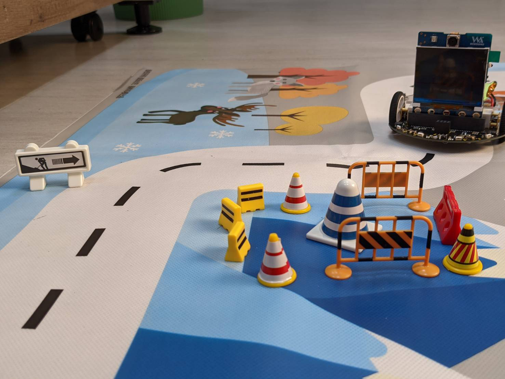
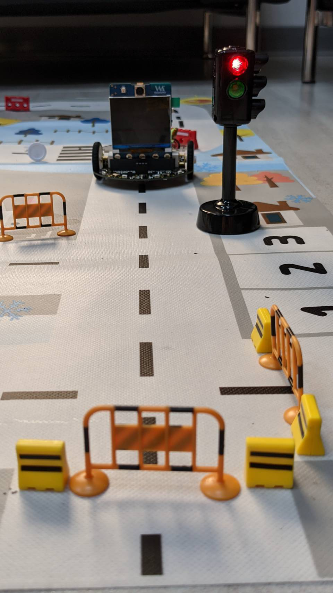
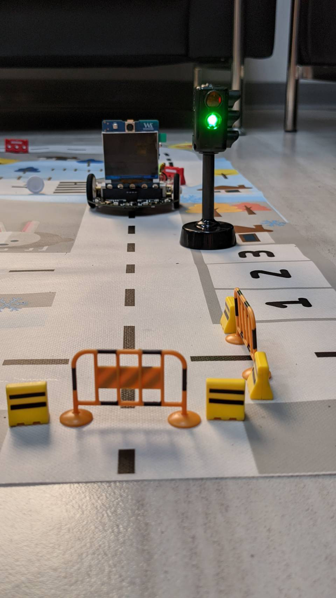
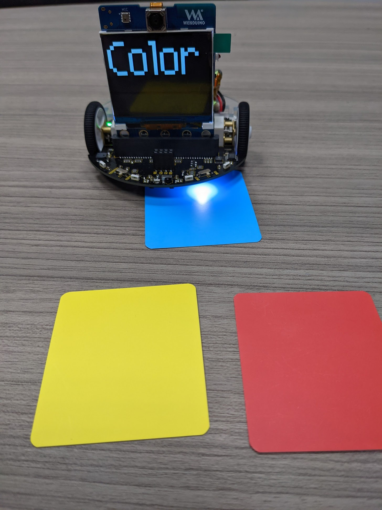
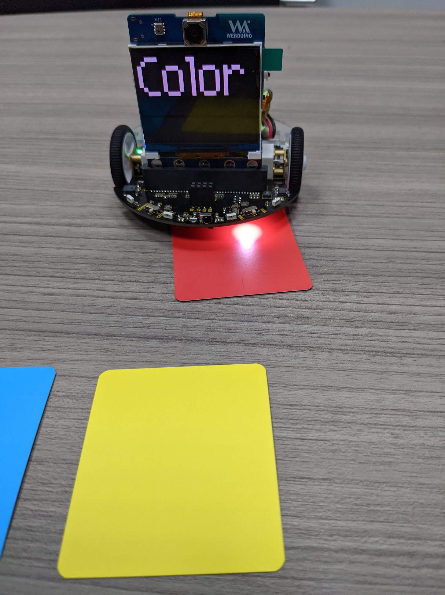
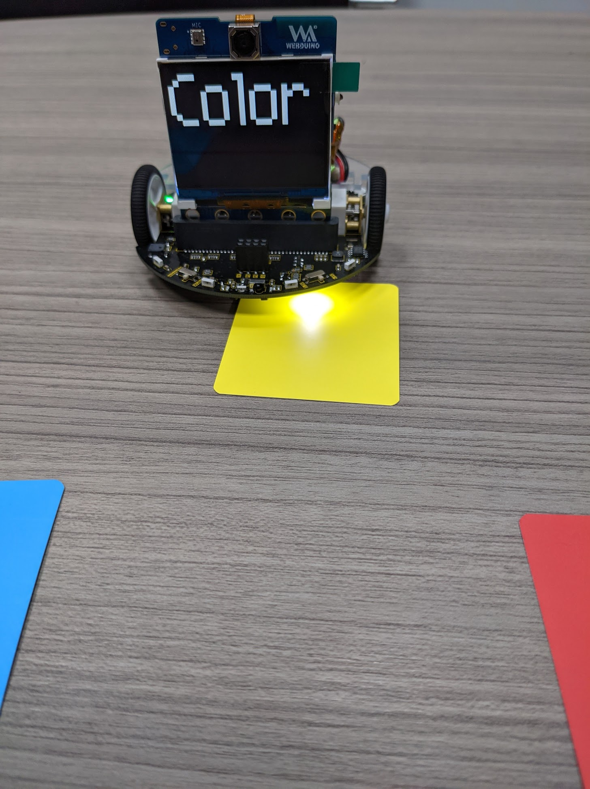
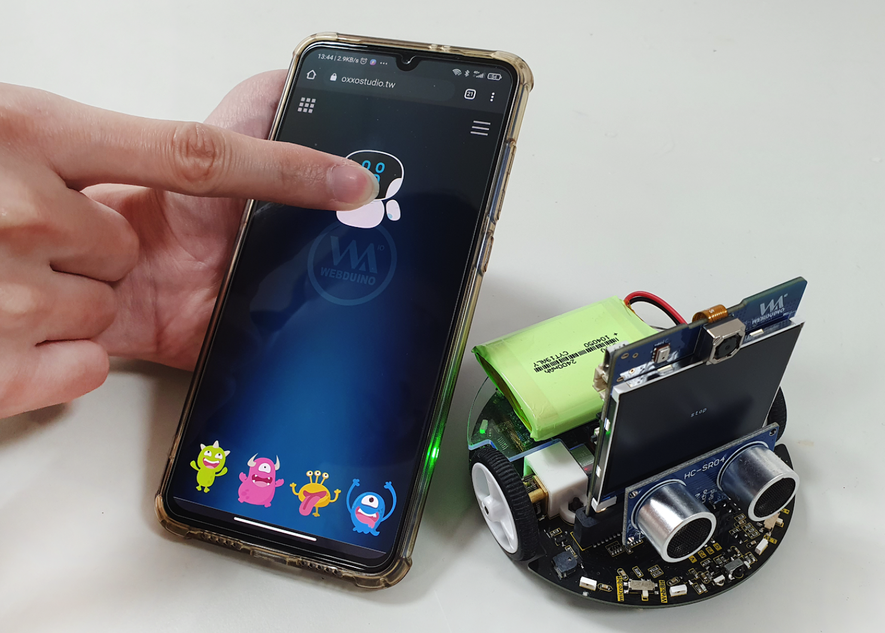

五、操控 MoonCar
2022-12-02

 
顏色偵測
這個例子顏色偵測使用的是 MoonCar 上面的 TCS34725 感測器，可用來偵測顏色。
先使用 class TCS34725 驅動感測器，進行打光和讀取顏色值。
  
from webai_blockly import TCS34725
from webai import *
from machine import I2C
i2c = I2C(id=3, freq=100000, scl=17, sda=15) #1920
pinB=16 # light
fm.fpioa.set_function(pinB,fm.fpioa.GPIO6)
gpioB=GPIO(GPIO.GPIO6,GPIO.OUT)
gpioB.value(0)
s = TCS34725(i2c)
img = webai.snapshot()
img.clear()
v = 100
while True:
time.sleep_ms(200)
try:
data = s.read(raw=True)
data = (data[0]+v,data[1]+v,data[2]+v)
print(data)
img.draw_string(2,2, "Color", color=data, scale=11)
lcd.display(img)
except Exception as e:
print(e)
循跡自走
小車沿著黑線移動。
from webai import *
speed = 60
carType = 1
def tracking(pin):
global carType,speed
left = p15.value()
right = p16.value()
msg = str(left)+" : "+str(right)
if left == 0 and right == 0:
if carType == 1:
mcar.forward(speed)
elif carType == 2:
mcar.move(0,speed)
elif carType == 3:
mcar.move(speed,0)
if left == 1 and right == 1:
carType = 1
mcar.forward(speed)
if left == 1 and right == 0:
carType = 2
mcar.move(0,speed)
if left == 0 and right == 1:
carType = 3
mcar.move(speed,0)
p15 = webai.io.pin(15,pull_mode=webai.io.PULL_NONE)
p15.irq(tracking,GPIO.IRQ_BOTH)
p16 = webai.io.pin(16,pull_mode=webai.io.PULL_NONE)
p16.irq(tracking,GPIO.IRQ_BOTH)
循跡 + 物件追蹤
沿著黑線移動，看見紅色小怪獸停車，看見綠色小怪獸繼續前進。
- 第 58 行 ～ 第 61 行：判斷處
from webai import *
speed = 60
carType = 1
def tracking(pin):
global carType,speed
left = p15.value()
right = p16.value()
msg = str(left)+" : "+str(right)
if left == 0 and right == 0:
if carType == 1:
mcar.forward(speed)
elif carType == 2:
mcar.move(0,speed)
elif carType == 3:
mcar.move(speed,0)
if left == 1 and right == 1:
carType = 1
mcar.forward(speed)
if left == 1 and right == 0:
carType = 2
mcar.move(0,speed)
if left == 0 and right == 1:
carType = 3
mcar.move(speed,0)
#webai.draw_string(140,100,msg,scale=2)
p15 = webai.io.pin(15,pull_mode=webai.io.PULL_NONE)
p15.irq(tracking,GPIO.IRQ_BOTH)
p16 = webai.io.pin(16,pull_mode=webai.io.PULL_NONE)
p16.irq(tracking,GPIO.IRQ_BOTH)
from webai_blockly import ObjectTracking
from time import sleep
from webai_blockly import Lcd
objGroup = None
obj = None
view = Lcd()
_deviceID = '6e5596'
otb = ObjectTracking(flip=1, model='monster', classes=['green','red','yellow','blue'], threshold=0.1, w=320, h=224)
while True:
otb.checkObjects()
green = otb.getObjects('green')
red = otb.getObjects('red')
if (len(red)) >= 1:
mcar.stop()
if (len(green)) >= 1:
tracking(None)
sleep(0.001)
馬達控制
前進
mcar.forward() # 100% 動力前進
mcar.forward(100) # 100% 動力前進
mcar.forward(50) # 50% 動力前進
後退
mcar.backward() # 100% 動力後退
mcar.backward(100) # 100% 動力後退
停止
mcar.stop() # 停止
mcar.forward(0) # 停止
mcar.backward(0) # 停止
左轉
mcar.left(100) # 100% 動力左轉
mcar.left(30) # 30% 動力左轉
右轉
mcar.right(100) # 100% 動力右轉
mcar.right(30) # 30% 動力右轉
左右輪
- ==mcar.move( 左輪 , 右輪 )==
- 數值區間：-100 ~ 100
from webai import *
mcar.move( 100 , 100) # 100% 前進
參考設定
mcar.move( -100 , -100) # 100% 後退
mcar.move( 45 , -45 ) # 向右轉
mcar.move( -45 , 45 ) # 向左轉
mcar.move(0,0) # 停止
相關感測器
超音波：距離偵測
利用發送超音波碰撞物體之後反射回來的時間差，來得出感測器與物體之間的距離。
使用前請記得先接上超音波感測器！
from fpioa_manager import *
from modules import hcsr04
import time
fm.register(6, fm.fpioa.GPIO0, force = True)
fm.register(11, fm.fpioa.GPIO1, force = True)
device = hcsr04(fm.fpioa.GPIO0,fm.fpioa.GPIO1)
while True:
try:
print(device.measure(hcsr04.UNIT_CM,100000))
time.sleep(0.05)
#except IDE interrupt
except Exception as e:
print(e)
if(str(e)=="IDE interrupt"):
break
紅外線：無線控制

接收遙控器發射的紅外線訊號，並顯示到螢幕上。
import lcd, image, utime
from Maix import GPIO
from fpioa_manager import fm
img = image.Image()
fm.register(25, fm.fpioa.GPIOHS1)
pin=GPIO(GPIO.GPIOHS1,GPIO.IN,GPIO.PULL_UP)
def read_data():
a = []
while pin.value() == 1:
pass
utime.sleep_us(13560)
for i in range(1000):
v = pin.value()
a.append(v)
utime.sleep_us(56)
a_c = []
count = 0
for i in a:
if i == 1:
count += 1
elif i == 0:
if count > 0 :
a_c.append(count)
count =0
for i in range(len(a_c)):
if a_c[i] > 10:
a_c[i] = "1"
else:
a_c[i] = "0"
B1 = "".join(a_c)
if(len(B1)==33):
print(B1[1:len(B1)])
hstr = '%0*X' % ((len(B1[1:len(B1)]) + 3) // 4, int(B1[1:len(B1)], 2))
print(hstr)
print("=====")
img.clear()
img.draw_string(50, 100, hstr, scale=5)
lcd.display(img)
return B1
while True:
f = read_data()
控制 LED 燈：魔幻 LED


- MoonCar 的 ws2812 Pin 腳為編號 22，總共有 8 顆燈
- 程式內容：魔幻 LED 範例。
- 第 4 行：設定 Pin 腳為 22、LED 數量為 8 顆燈。
from modules import ws2812
import time
class_ws2812 = ws2812(led_pin=22,led_num=8)
color = [(30,0,0),(0,30,0),(0,0,30),(30,30,0),(30,0,30),(0,30,30),(30,30,30),(0,0,0)]
while True:
for x in color :
for i in [0,1,2,3,4,5,6,7] :
class_ws2812.set_led(i,x)
class_ws2812.display()
time.sleep(0.05)
蜂鳴器：播放音樂
- MoonCar 的蜂鳴器 Pin 腳為編號 24。
- 程式內容：播放 3 個音符。
- 第 3 行：設定發音頻率
- 第 4 行：設定發音時間 ( 秒 )
from webai_ext import Buzzer
buzzer = Buzzer()
tune = [392,692,440]
sec = [0.25,0.25,0.5]
for i in [0,1,2] :
buzzer.bee(tune[i],sec[i])
萬用遙控器控制登月小車
執行程式後開發板螢幕會顯示 QRcode，使用手機掃描後即可用 Webduino 萬用遙控器控制小車。
萬用遙控器的使用方式可以參考：萬用遙控器控制登月小車。

from webai import *
import machine , ubinascii , os , time , gc , sensor
mcar.init()
def cmd(name,msg):
webai.cmdProcess.sub(name,msg)
if msg == 'up':
webai.show(file='mrun.jpg')
mcar.forward(50)
if msg == 'down':
webai.show(file='m02.jpg')
mcar.backward(50)
if msg == 'left':
webai.show(file='mleft.jpg')
mcar.left(50)
if msg == 'right':
webai.show(file='mright.jpg')
mcar.right(50)
if msg == 'reset':
webai.show(file='m01.jpg')
mcar.stop()
if msg == '開心':
webai.speaker.play(filename="logo.wav")
webai.show(file='mooncar.jpg')
webai.mqtt.sub('PING',cmd,includeID=True)